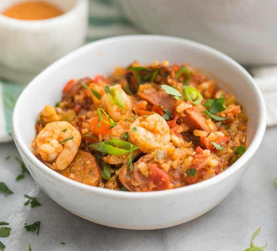

Jambalaya!

Description
What better way to get that mardigras feeling then cooking your own fresh pot of jambalaya!
This dish is filled with all the ingredients from the bayou. Onions, bell peppers, celery, crawfish, shrimp, sausage
and much more make up this cajun delight. Not only does this dish taste fantastic, but it also looks great too.
Ingredients
- 1 pound sausage
- 1.5 tablespoons olive oil (or avocado oil)
- 4 cloves garlic (minced)
- 1 red bell pepper (deseeded and chopped (about 1.5 cups)
- 1 green bell pepper (deseeded and chopped (about 1.5 cups)
- 1 stick of celery (thinly sliced)
- 1/2 of one onion (chopped)
- 1.5-2 taablespoons of Cajun seasoning
- 1 teaspoonof black pepper
- 1/2-1.5 teaspoons of salt (use 1/2 teaspoon if your Cajun seasoning contains salt, up to 1.5 teaspoons if it doesn't)
- 1/8 teaspoon of cayenne pepper (optional)
- 2 14.5-ounce cans of fire-roasted tomatoes (29 ounces total)
- 1 cup of chicken broth
- 5 cups frozen cauliflower rice
- 1 pound medium raw shrimp (peeled)
- green onions (sliced, for garnish)
- fresh parsely (chopped, for garnish)
- Lousiana hot sauce (to serve, optional)
Steps
-
In a large heavy-bottomed pot or Dutch oven, heat 1/2 tablespoon of olive or avocado oil over medium heat. Add sliced sausage and cook until browned on both sides,
stirring occasionally. Transfer sausage to a plate.
-
Add 1 tablespoon oil. Add garlic, onion, bell pepper, and celery; sauté until softened, about 5-7 minutes over medium heat.
-
Add Cajun seasoning, starting with 1.5 tablespoons, black pepper, salt, and optional cayenne pepper to pot; stir. Add tomatoes, chicken broth, and sausage to pot,
and stir to mix.
-
Bring mixture to a boil then reduce heat to low; simmer for 25-35 minutes or until thickened and liquid is reduced.
-
Stir in shrimp and cauliflower rice. Cook on low, stirring regularly until rice is heated through and shrimp turn pink and no longer translucent. Don't overcook the
shrimp.
-
Ladle into bowls and top with sliced green onions and parsley. Serve with Lousiana hot sauce.
Want to try some other recipes?
Return home